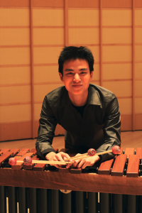

Our Instructors
Mr. Jeremy Lawi
 Jeremy Lawi earned a Bachelor of Music Degree in Percussion Performance at the University of British Columbia in 2012 and is currently at the University of Hawaii pursuing a Post Baccalaureate Certificate in Music Education. Jeremy has been playing percussion since the age of twelve and studied jazz drum set with Eien Hunter-Ishikawa. In 2007, he went to Canada and held principal roles in the UBC Symphonic Wind Ensemble, Symphony Orchestra, and Jazz Band. After successfully auditioning to be a performance major, he won several scholarships and the UBC Concerto Competition in 2012. Jeremy also founded and currently directs the 'Iolani School Percussion Ensemble.
Mr. Zachary Morita
Zachary Morita received his Bachelor of Education in Secondary Music from the University of Hawaii at Manoa. Zachary began his teaching career at Niu Valley Middle School in 2008. Through the years, Zachary has built a prominent percussion program at Niu Valley. In the Spring of 2012, the Niu Valley Middle School Percussion Ensemble travelled to Dayton, Ohio to compete in the Winter Guard International Percussion World Championships. As of today, they are the only middle school percussion ensemble from Hawaii to qualify and enter. That same year, Zachary and his students were invited to meet Governor Neil Abercrombie, Senator Sam Slom and Representative Mark Hashem at the Hawaii State Capitol. In 2013, Zachary organized the Inaugural Niu Valley Middle School Percussion Festival. The festival also included a partnership with Mr. Gerald Noble and the percussion students of Wright State University.
Mr. Jordan Schifino
 A native of Rochester, NY, Jordan Schifino studied both percussion and piano at the Eastman School of Music with Ruth Cahn and Alla Kuznetsov respectively. Mr. Schifino attended the Cleveland Institute of Music studying with principal timpanist Paul Yancich and retired principal percussionist Richard Weiner of the Cleveland Orchestra, where he received his BM and MM in Percussion Performance. After moving to the islands in 2009 to perform with the Honolulu Symphony, he returned to play with the Hawaii Symphony Orchestra in 2012 and is now serving as acting principal percussionist. He was appointed to the Hawaii Symphony Orchestra percussion section as their associate principal percussionist in June, 2015. Mr. Schifino has performed with The Cleveland Orchestra, New World Symphony, Toledo Symphony, West Virginia Symphony, South Florida Symphony, CityMusic Cleveland, AIMS Festival Orchestra in Graz, Austria, Canton Symphony, Hawaii Opera Theatre and Maui Pops Orchestra, among others. In addition to performing, Mr. Schifino is the lecturer of percussion at the University of Hawaii, Manoa and works as a percussion and eurhythmics teaching artist with Hawaii's el Sistema program, Kalikolehua.
A native of Rochester, NY, Jordan Schifino studied both percussion and piano at the Eastman School of Music with Ruth Cahn and Alla Kuznetsov respectively. Mr. Schifino attended the Cleveland Institute of Music studying with principal timpanist Paul Yancich and retired principal percussionist Richard Weiner of the Cleveland Orchestra, where he received his BM and MM in Percussion Performance. After moving to the islands in 2009 to perform with the Honolulu Symphony, he returned to play with the Hawaii Symphony Orchestra in 2012 and is now serving as acting principal percussionist. He was appointed to the Hawaii Symphony Orchestra percussion section as their associate principal percussionist in June, 2015. Mr. Schifino has performed with The Cleveland Orchestra, New World Symphony, Toledo Symphony, West Virginia Symphony, South Florida Symphony, CityMusic Cleveland, AIMS Festival Orchestra in Graz, Austria, Canton Symphony, Hawaii Opera Theatre and Maui Pops Orchestra, among others. In addition to performing, Mr. Schifino is the lecturer of percussion at the University of Hawaii, Manoa and works as a percussion and eurhythmics teaching artist with Hawaii's el Sistema program, Kalikolehua.